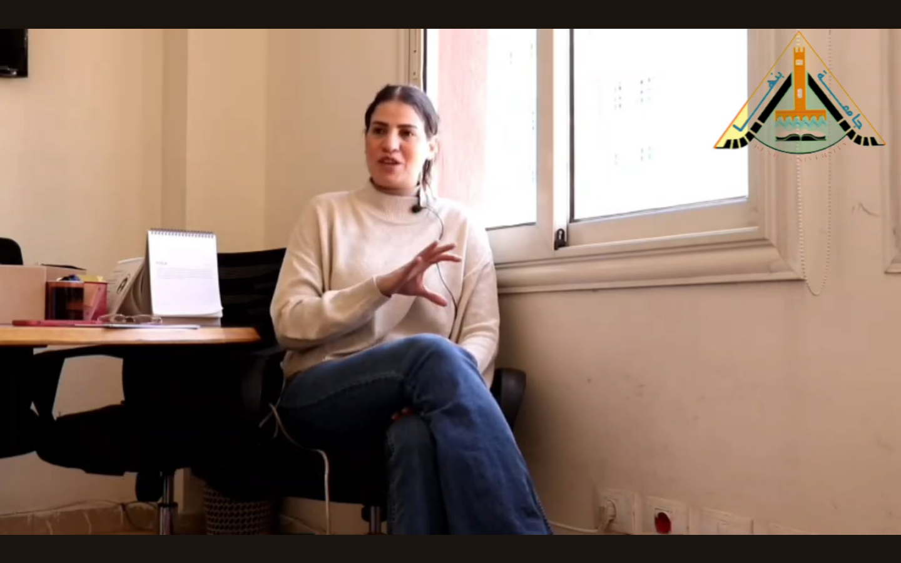

في سياق تحقيق التنمية المحلية وتعزيز جودة الحياة في المجتمعات، تعتبر المبادرات المحلية في مختلف المحافظات أساسية لتلبية احتياجات السكان وتعزيز التنمية المستدامة. تتنوع هذه المبادرات في مجالاتها وأهدافها، وتتمحور حول تحقيق التوازن بين النمو الاقتصادي والاجتماعي والبيئي، وتحسين جودة الحياة للفرد والمجتمع. تعتمد نجاح المبادرات المحلية على فهم دقيق للاحتياجات والتحديات الفريدة التي تواجه كل محافظة، وبناء استراتيجيات موضوعية وفعّالة للتعامل معها. فالمبادرات المعيارية تحدد المعايير والمقاييس التي يجب أن تتبعها هذه المبادرات في تنفيذ أنشطتها وبرامجها، وذلك بناءً على الاحتياجات الفعلية لكل محافظة واستجابتها لها بشكل ملائم. في هذا الحوار مع الاستاذة ولاء سليم مدير المتابعة والتقييم في مركز شؤون المرأة، سنتعرف على أهمية المبادرات المحلية ودورها في تعزيز التنمية المستدامة على المستوى المحلي، وتعزيز الشمولية والعدالة الاجتماعية في تقديم الخدمات وتحقيق التقدم الاجتماعي والاقتصادي.
اختصاصات المجلس القومي للمراة
حيث بدات حديثها في التعريف بالمجلس القومي للمرأة وهو هيئة وطنية في العديد من البلدان، بما في ذلك مصر والتي تعمل على تعزيز دور المرأة وحقوقها والعمل على تحقيق المساواة بين الجنسين. حيث يختص المجلس بوضع السياسات والخطط التي تهدف إلى تعزيز حقوق المرأة والمساواة بين الجنسين في مختلف المجالات، مثل التعليم والصحة والعمل والتمثيل السياسي وغيرها، وتنفيذ البرامج والمشاريع التي تستهدف تحسين وضع المرأة في المجتمع، بما في ذلك توفير الدعم الاجتماعي والاقتصادي والتعليمي والصحي. حيث لا يقتصر دور المجلس القومي للمرأة على مجرد التصدي للعنف ضد المرأة، بل يشمل أيضًا تنمية المرأة وتحسين أوضاعها. حيث يعتمد عمل المجلس على القانون رقم ٣٣٢٩ لعام ٢٠٠٢، والذي ينص على حماية المرأة والحد من العنف ضدها. وتم نشر هذا القانون في وسائل الإعلام والمواقع الرسمية للحكومة لضمان توعية الجمهور بحقوق المرأة والإجراءات المتاحة للحماية.
وأضافت سليم ان مكتب شكاوى المرأة يقدم مجموعة شاملة من الخدمات القانونية والاجتماعية والنفسية للنساء اللواتي يلجأن إليه للحصول على المساعدة والدعم. تشمل هذه الخدمات استشارات قانونية متخصصة، حيث يقدم المحامون المتخصصون في المكتب نصائح وتوجيهات قانونية للنساء اللاتي يواجهن مشاكل قانونية، ويساعدونهن في فهم حقوقهن وخياراتهن القانونية. بالإضافة إلى الخدمات الاجتماعية مثل الدعم النفسي والاجتماعي، حيث يقدم فريق من الاختصاصيين النفسيين والاجتماعيين الدعم النفسي والتوجيه للنساء للتعامل مع الآثار النفسية والاجتماعية للعنف أو المشاكل الأخرى التي يواجهونها.، ويعمل المكتب أيضًا على متابعة قضايا النساء، حيث يقوم بتوثيق الشكاوى ومتابعة التحقيقات والإجراءات القانونية والقضائية المتعلقة بكل قضية، ويوفر الدعم والتوجيه للنساء طوال مراحل المحاكمات والجلسات القضائية، كما يقدم المكتب خدمات توعوية وتثقيفية للنساء والمجتمع بشكل عام، بهدف زيادة الوعي وتعزيز الحماية والدعم للنساء في المجتمع. باختصار، يعمل مكتب شكاوى المرأة في المجلس القومي للمرأة على تقديم الدعم والحماية والمساعدة الشاملة للنساء اللواتي يواجهن العنف أو يحتجن إلى المساعدة القانونية أو الاجتماعية أو النفسية.
اهداف المجلس القومي للمراءة
يقوم المجلس بتنظيم أنشطة توعوية متعددة للتوعية بقضايا العنف ضد المرأة ومحاربته، ويعمل على معالجة الشكاوى المتعلقة بحقوق المرأة من خلال مكتب شكاوى المرأة، الذي يضم فريقًا قانونيًا ونفسيًا واجتماعيًا لمساعدة النساء في تقديم الشكاوى والحصول على الدعم اللازم ، بالإضافة إلى ذلك إطلاق حملات توعية في وسائل الإعلام المختلفة، وإنتاج مواد توعوية مثل الفيديوهات والرسوم المتحركة، بالإضافة إلى تنظيم ورش عمل وندوات توعية في المدارس والجامعات والمجتمعات المحلية، وإطلاق حملات على منصات التواصل الاجتماعي، وتنظيم فعاليات مجتمعية مثل المسرحيات والمعارض لنشر الوعي بقضايا المرأة وحقوقها. ويهدف المجلس إلى زيادة الوعي بقضايا العنف ضد النساء من خلال مجموعة متنوعة من الفعاليات والأنشطة التوعوية. يُعنى هذا بالتواصل مع الشباب والنساء في الجامعات والمدارس والمجتمعات المحلية، وتثقيفهم حول كيفية التعرف على أشكال العنف والتصدي لها قبل حدوثها. هذا يشمل الإجراءات الوقائية والتدابير الأمنية التي يمكن للنساء اتخاذها لحماية أنفسهن. كما يُقدم المجلس الدعم القانوني والنفسي للنساء اللاتي يعانين من العنف، بما في ذلك توجيههن إلى المصادر المناسبة للمساعدة والدعم.
الفعاليات والأنشطة التوعوية
يقوم المجلس بتنظيم مجموعة واسعة من الفعاليات والأنشطة التوعوية بهدف زيادة الوعي بقضايا العنف ضد المرأة وتشجيع التصدي لهذه الظاهرة. يتضمن ذلك إقامة ندوات وورش عمل ومحاضرات توعوية في الجامعات والمدارس والمجتمعات المحلية، حيث يتم استهداف الشباب والفتيات بشكل خاص لنشر الوعي وتعزيز المعرفة بحقوق المرأة وطرق الوقاية من العنف، كما ينظم المجلس حملات توعية وتثقيفية عبر وسائل الإعلام المختلفة مثل التلفزيون والراديو ووسائل التواصل الاجتماعي، بهدف وصول رسالته إلى أكبر عدد ممكن من الناس. بحيث تشمل الفعاليات الأخرى التي ينظمها المجلس زيارات ميدانية إلى القرى والمناطق النائية، حيث يتم التواصل المباشر مع السكان لتوعيتهم بأهمية مكافحة العنف ضد المرأة والمساعدة في تحديد الحالات التي تحتاج إلى دعم ومساعدة، حيث يقدم المجلس الدعم القانوني والنفسي والاجتماعي للنساء اللاتي يعانين من العنف، من خلال تقديم الاستشارات اللازمة وتوجيههن إلى المصادر المناسبة للمساعدة والدعم. بشكل عام، تهدف هذه الفعاليات والأنشطة إلى بناء مجتمع يتمتع بثقافة السلامة والاحترام لحقوق المرأة وتعزيز الوعي بأهمية مكافحة العنف ضد المرأة في جميع الأوساط والمجتمعات، وتتلقى المبادرات استجابة إيجابية من الشباب، خاصة في الجامعات والمؤسسات التعليمية. حيث يشارك الشباب بنشاط في الحملات التوعوية ويعبرون عن دعمهم لمكافحة العنف ضد النساء. بالإضافة إلى ذلك، يتم توجيه رسائل توعوية إلى الرجال بشكل مستمر، مع التركيز على دورهم في منع ومكافحة العنف ضد النساء وتشجيعهم على التحدث ضد أفعال العنف والتصرف بشكل إيجابي في المجتمع.
التعاون مع مؤسسات اخرى
اكدت سليم ان المجلس القومي للمرأة يعتمد على التعاون مع الجهات الحكومية الأخرى لضمان حماية حقوق النساء المعنفات وتقديم الدعم لهن. ويشمل هذا التعاون توجيه الشكاوى والبلاغات إلى الجهات المختصة مثل النيابة العامة والقضاء، حيث يتم تقديم المساعدة القانونية والتوجيه للنساء المتضررات للتعامل مع الأمور القانونية. كما يُساعد المجلس أيضًا في تقديم الدعم النفسي والاجتماعي للنساء المعنفات، ويعمل على توجيههن إلى الخدمات اللازمة لتلبية احتياجاتهن. حيث يُعتبر المجلس مؤسسة توعية وتوجيه، وليس لديه صلاحيات للتدخل المباشر في حالات الطوارئ. ومع ذلك، يقوم المجلس بتقديم الدعم والتوجيه للنساء المعنفات في التحدث إلى الجهات المختصة، مثل تقديم المساعدة في التواصل مع اللجان القانونية أو تقديم النصح والدعم النفسي في الأوقات الصعبة. وتعتمد الإجراءات القانونية والتدخل الفوري على الجهات الحكومية المختصة مثل الشرطة والنيابة العامة، التي تتولى حماية النساء ومعاقبة المعتدين وفقًا للقوانين والأنظمة القائمة. قالت سليم انه بالنسبة للمبادرات فعند التخطيط لتنفيذ احداها، نعتمد عادة على قاعدة عامة تشمل استهداف جميع المحافظات. ومع ذلك، يمكن أن نستخدم تقديرًا معينًا لتحديد الأولويات في بعض المحافظات التي تواجه تحديات خاصة، مثل المحافظات التي تعاني من مشكلات محددة مثل الدقهلية. يتم تحديد هذه الأولويات بناءً على الاحتياجات والتحديات المحلية الفريدة لكل محافظة، وذلك لضمان تحقيق أكبر فعالية ونجاح للمبادرات المقدمة. في الختام، يعمل المجلس القومي للمرأة بجدية على تعزيز حقوق المرأة وتحقيق المساواة الجنسية من خلال تنفيذ مبادرات معينة تهدف إلى حماية النساء من التمييز والعنف وتعزيز مكانتهن في المجتمع. بالإضافة إلى ذلك، يسعى المجلس إلى رفع الوعي بقضايا المرأة من خلال الأنشطة التوعوية المتنوعة التي ينظمها. من خلال هذه الجهود المستمرة، يأمل المجلس في خلق بيئة تشجع على تحقيق المساواة وتمكين المرأة في جميع جوانب الحياة الاجتماعية والاقتصادية والسياسية.
- حوار صحفي مع الاستاذة ولاء سليم مدير المتابعة والتقييم في مركز شؤون المرأة
- مصدر الصور الحوار الصحفي
- مصدر الصور صورة لمقر المجلس القومي للمراءة جوجل